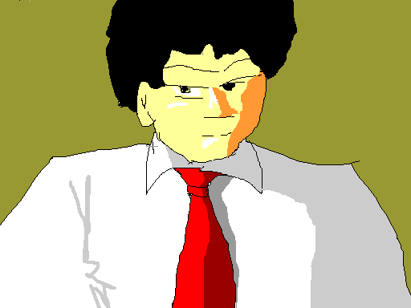
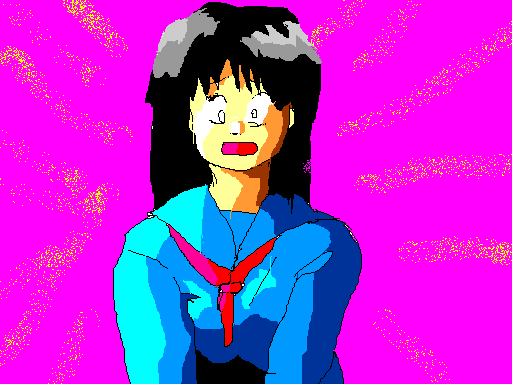
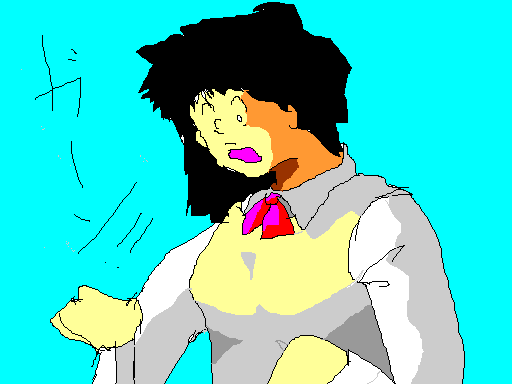
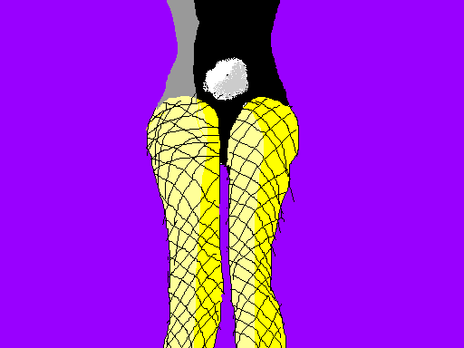

―― 華代ちゃんシリーズ・番外編
――
（ハンター・シリーズ２２）
「五番目の男」
※ 「華代ちゃんシリーズ・番外編」の詳細については、http://www.geocities.co.jp/Playtown/7073/kayo_chan02.html を参照にしてください。
「……次はこいつだ」
ボスはそう言って、一枚の写真を彼の目の前に置いた。
「そういうことで、よろしく頼むぞ、８号」
「はい」
「履歴書関係は事務から貰えるはずだ。……手筈はついている」
「お任せください」
「８号」と呼ばれた男はそう答えると、写真をポケットに入れ、立ち上がった。
「五代秀作」、か……。
工夫の無い名前である。
都内の私立大に通う大学生。冴えない外見だが、実は理系の秀才……いや「天才」であるという。
大学三回生で２１歳だから「年齢通り」なのだが、実際には飛び級を繰り返している。本人の気が乗らなければ全く勉強しない上に、数学だけに夢中になって、他の教科を全くやらなかったりしていたとか。
そんなこんなで高校を中退して、遊び呆けていたらしい。よく親が許していたものだ。
結局、受験科目が極端に少ない私立を選んで、大検から合格を果たした。
数学を選んだのは本人曰く、「憶えなくていいから」らしい。
「憶えなくていい」といっても、公式や定理は覚えなくちゃいけないだろう……と思うのだが、それは数学の才能の無い凡人の錯覚、らしい。
四則演算と一部の公式さえあれば、あらゆる問題を解くことができるものだとか。多くの「公式」だの「定理」だのは、それらを使って導き出されたもので、言ってみれば九九を暗記するようなものなのだそうだ。
数少ない条件から無理矢理に解いてしまうので、少々時間がかかるのが難点だが……彼位の天才になると、“解けない問題は無い”
らしい。
資料によると、数学の秀才を世界中から集めているドイツから留学の話が来ているらしい。
ドイツと言えば、あのガウスを生んだお国柄……のはずである。
やれやれ、雲の上の話だな……。
８号は呆れた。
だが世の中には、こういうタイプの人間もいるのだ。
素行には非常に問題があるらしい。何しろ “憶えなくていい”
数学以外は殆ど何もしない。今も毎日遊び呆けているらしい。
「……らしい」というのは、大学側でもエキセントリックな彼の行動範囲に、その行状が完全に掴めてはいないらしいのだ。
理系の秀才は、実際かなり突っ飛な人間が多い。
ノーベル賞受賞者や、数学のノーベル賞と言われている「フィールズ賞」なんかを受賞する人間は、一歩間違えれば逮捕されそうな無茶な人間ばかりである。
そして……この才能を物理に応用してもらおうと、この五代青年には宇宙開発事業団からも引き合いが来ているらしい。実際には企業からの引き合いも多く、将来有望なのである。
成績優秀な学生に国家が目をつけるのは、アメリカなどでは常識で……同じ学生を政府機関同士で取り合うのは日常茶飯事である。
搦め手でせめても仕方があるまい。……ここは正攻法でいこう。
８号は、大学の事務局で五代青年の住所や授業の予定を尋ねた。
最初は訝しがられたが、政府機関の名前を出すと、すぐに教えてくれた。
事務局でも彼を尋ねてくる人間は慣れっこになっているらしく、話が通じさえすれば手馴れた物だった。
「あの……求人ですよね？」
「まあ、そんなところです」
「え〜っと、その……住所とか授業の予定はお教えした通りですけど……簡単には捕まらないと思います……」
何だか申し訳無さそうである。似たような例を何度も経験しているのだろう。
「いや、いいですよ。こちらもプロですので」
新規獲得専門部署である８号は、力強く言った。
私立大学らしく、オシャレなカフェテラスだった。
手にした写真を見比べる……間違い無さそうだ。
軽薄そうだが、意外に好青年然とした青年が、女の子と一緒に話している。
目撃者は出したく無いな……。
８号は慎重に待った。
女の子が席を立つ。……今だ。８号は青年に近付いた。
五代青年は、見てるだけで胸焼けしそうな大きなチョコレートパフェをつついている。
「ここ、いいかな？」
いきなり声を掛ける８号。だが、五代青年は一心不乱にパフェを食べている。
「あー、君――」
無視しているのか、彼はこちらを見向きもしない。
「あー、もしもし？」
咳払いをし、少し声を大きくする。青年は、そこで初めてこちらに顔を上げた。
「……座ってもいいかね？」
動きを止め、“ちょっと待って” とでも言いたげに手を挙げる、五代青年。
口の中が一杯になっているのだろう。８号は言われるままに待った。
青年はしばらくもぐもぐやっていたが、やっと口の中のものを飲み込んだみたいだ。
そして――
「……で、何です？」
普通の声だった。
「……座ってもいいかな？」
「注文するんですか？」
「ん？」
「じゃ、メニュー」
五代青年は、スプーンでパフェを口に運びながら、空いた方の手でメニューを渡してきた。
「…………」
なるほど……かなりずれている。
８号は、勝手に座る事にした。
「あー、君……五代君」
「？」という顔をしながらも、相変わらずもぐもぐ口を動かす五代青年。
「……折り入って、君に話があるんだが」
「…………」
手のひらを上に向けて、ひょい――と差し出してくる。
「何かくれ」、というジェスチャーにも見えるが、「どうぞ話してください」ということなのだろう。
未来を担う大学生が、明らかに目上の人間に対してこの態度では困りものだ。
まあ、こいつには一般論が通じないらしいので、それも仕方が無いのか。
「場所を変えようか……」
紅茶にケーキが運ばれてきた。
本当によく食う男だ。しかも痩せぎすである。よく分からない。
「……じゃあ、本題に入りたいんだが、……いいかな？」

「はい。どうぞ」
軽い返事である。話を真剣に聞いているのかどうか分からない。
「……結論から言うと、君をリクルートしたい」
「はい」
そう答えて、五代青年はケーキをパクつき始める。
「その “はい” ってのは、同意してくれたってことなのかな？」
「そうですね……じゃあ仕事の内容を――」
「そうだな」
やっと本題に入れる。ハンター８号はそうため息をついた。
ここは、組織「ハンター」の “ブラインド・カフェ”。
アメリカ中央情報局（ＣＩＡ）なども、政府組織なので一定割合以上の身体障害者を雇用しなくてはならない。
組織内には視覚障害者もいて、専用の食堂 “ブラインド・カフェ”
が併設されている。
“ブラインド・カフェ” には、当然ながら掲示物などに機密性のあるものは存在しない。よって、一般の人間が入ることができる唯一の場所でもある。
ここ以外の施設に立ち入るには、組織に雇用される以外に道は無い……というわけだ。
勿論、視覚障害を持たない職員でも利用できる。一見普通の地下喫茶にしか見えないこの場所も、周囲は組織の職員ばかりなのである。
「まず、この写真を観て欲しい」
差し出されたその写真には、小学校低学年くらいの女の子が写っていた。
「どう思う？」
「どうって……この娘（こ）ですか？」
「そうだ」
「可愛いですね」
普通の反応だ。
「そうだ。確かに可愛い。だが……それだけでは済まされないんだ」
「これから誘拐でもするんですか？」
「君ねえ――」
「あはは……冗談ですよ」
「……真剣に聞いてくれるか？」
「はあ……」
「遠まわしに言っても仕方が無いので結論から言う。この娘（こ）には特殊能力がある」
「ポルターガイストとか？」
「ふん、その程度は知っているのか。……悪くない。でも、違う」
ホルターガイスト（騒霊）とは、家具などが勝手に部屋の中を暴れまわる現象を言う。原因は完全に解明されていないが、思春期の子供が持つ一種の超能力の発現（暴走）では無いかと言う説がある。事実、ポルターガイスト現象が起こる家庭には思春期の子供がいる場合が多い。
「この娘は……男を女にすることができる」
五代青年は、少し考えこんた。
「ねえ……言わなくてよかったの？」
事務員の一人が言う。
「まあ……そう言っても仕方が無いし――」
「確かに、それこそ信じて貰えるとは思えないけどね」
別の事務員が相槌を打つ。
「五代君を勧誘しようとした人が軒並みヒドイ目に遭ってる……って言われてもねえ」
顔を見合わせる大学の事務員たち。
「あ、でも今日お葬式らしいわよ。本当にヒドイ交通事故だったんですって」
ヒソヒソ声になる事務員たち。
「……？」
首をひねる五代青年。「……それは、“男を女に変えることができる”
って意味ですか？」
「そうだ」
多くの人間に解説してきたが、こういう反応は初めてだ。
五代青年の目がぐるぐると泳ぐ。……実は彼が考え事をする時の仕草なのだ。
「……疑わないのか？」
「はあ、……まあ、ありえない話じゃないし――」
８号は、少したじろいだ。
予定が狂ってしまったからである。
いつもなら、ここで「そんな馬鹿な」といった反応が返ってくる。
そこで、「待ってました」とばかりに畳み掛けるのだ。だが、こいつは「ありえない話じゃない」などと言う。
ははあ、さては……
「本気にしてないだろ？」
「…………」
また目が泳いでいる。
「まあ、その……滅多には無いでしょうね……」
どうもこの反応は良く分からない。からかっているのだろうか？
「こっちから聞くが、どうして『ありえる』と思うんだ？」
「えーとですね……」
照れながら頭を掻く、五代青年。「『ありえる』んじゃなくて、『
“ありえない” ことを証明するのは難しい』ってことなんですけど――」
ほう、「証明」か。
数学の分野の中でも、最も「面白い」と言われている分野である。ここだけの話だが、８号も少々憶えはある。
「ちょっとその辺りをご教授願いたいんだが……」
ちょっと引っ掛けてみた。百年に一人の数学の逸材とやらの個人教授も悪くない。雑談で雰囲気をほぐすのも仕事のうちだ。
「まあその……僕って喋るの苦手なんで――」
「ああ、構わんよ」
「その……帰納法（きのうほう）はご存知で？」
「まあ、な」
「帰納法」とは、「ある特定の物についての判断」から「全てについての判断」の帰結を得ようという推論である。前者は「特称命題」、後者は「全称命題」という。
分かりやすく言うと、「ある所で食べたまんじゅうは甘かった」ので「故にまんじゅうは甘い」と結論することである。
「じゃあ、「不完全帰納法」は？」
「……いや」
「まあその……数覚（すうかく）って言うらしいんですけど…………ちょっと僕らって、感覚が特殊らしいんですけどね」
いや、こいつは只者では無い。数の話になった途端に雰囲気が変わった。
「極論すれば、身の回りの事象から導く事のできる全称命題は……ありません」
普通に「全称命題」とか言いやがる。……面白くなってきた。
８号は身を乗り出した。
「つまりそうか……見たことが無いから、『分からない』ってことか」
「まあ、そういうことです」
「ふむ……」
「この世には完全な帰納法はありません。数学以外はね」
これは別に傲慢な発言では無い。自然科学は常に
“新説” に覆される危険にさらされている。ニュートン力学しかり、アインシュタイン力学にしてもだ。
いずれの学説も、その範囲内では完全に説明出来るが、別の証明方法によって覆されることもある。
「完全な証明は出来ません。神様でもない限りは」
五代青年は口下手らしいので、補足しよう。
「数学的証明」とは、「１＋１＝２」や、「複素数を用いれば三次方程式以上でも必ず解を持つ」などである。これらは決して覆される事は無い。
それに対して「自然科学」の「命題」は、どれだけ実験を繰り返しても「常に成り立つ」と断言する事は出来ない。だが、ある程度以上の確度をもって「決め付ける」ことは出来る。これを「不完全帰納法」という。
それこそ「落体実験」を百万回、一千万回繰り返したとしても、その次の落体実験で「物体がまっすぐに落下」しないかも知れない。その可能性はゼロでは無いのだ。
普通の人間なら、自分の見た限りで普遍の事実なら、それが真理であると思い込むであろう。人間は水の上は歩かないし、死んだ人間が生き返る事も無い。
しかし、数学者はそうは考えない。「自分の見聞した範囲で観察出来ない」だけのことである。……もしかしたら、そういう事例があるかも知れないではないか。
何故なら、「数学以外に完全な学問は無い」からである。そうでなければ、「数学的帰納法」や「背理法」が使えなくなってしまう。
五代青年の言わんとするところは理解できた。だが……、
「確かにそうかもしれん。この世に人間が何人いるか分からないが、中には突然性転換してしまうようなのがいるかも知れないし、人を性転換させることができる人間がいるかもしれない……だがなあ――」
「コップの中の水が、真夏で冷たいことってあると思います？」
「……？ それは、氷水がか？」
「いえ、普通の水です。ぬるい」
「そりゃ……無いだろ」
「あるかも知れません。滅多に無いでしょうけど」
「どういうことだ？」
「たまたまその瞬間に、氷の中の水の分子が動きが鈍くなるかも知れないでしょ」
「……まあ、そりゃ――」
「確かに、数千億年に一回も無いかも知れないけど」
にこにこと笑う五代。
「は……は、なるほど……」
普段から大きな数字を扱いなれているんだろうが、ちょっと笑いが引きつってしまう。
８号も人並に数学は好きだが、気軽にやれ「無限」だの、天文学的数字だのを振り回す感覚は……実はあまり好きでは無かった。
そもそも「真実」とやらを通すと、何でも無い日常が得たいの知れないものに見えてきてしまうのだ。
「君は……物理も嗜むのかい？」
「まあ、唯一の取り得なんでなるべく点数を取れる方向で――」
こうしてヘラヘラしているところを見る限り、ごく普通の大学生である。
こいつの話を聞いていると、あの華代の蛮行も
“あり得ること” に思えてしまう……って、実際あり得るんだが。
「まあ、そこまで分かってくれてるんなら話が早い。“華代”
についての説明、聞いてくれるな」
「どうぞ」
五代青年は、特に変わった様子も見せなかった。
８号は、突飛な内容を落ち着いた口調で説明した。
その少女は “困っている” 人の元に出現し、名刺を差し出し、「悩みを解決する」と言って依頼者やその関係者を性転換させてしまうのだという。
それは、「正座するのに女の子なら女の子座りが出来るから」などといった下らない理由や、結婚に障害のある男女の性別を逆転させたり……と、やりたい放題である。
とにかくその特徴は、事態の優先順位の判定基準がデタラメで、笑ってしまうほど強引な理由で、こじつけとしか思えない性転換劇が行われるということである。勿論被害者にとっては笑い事ではない。
「……と、言うわけだ」
五代の反応を見る8号。
涼しい表情は変わらない。大抵この段階で、「馬鹿にするな」という表情に変わるものだが。
「あきれたかい？」
「まあ、……どうでしょうか？」
ひょっとして、こいつはどんな深刻な話をされても、まともに聞いていないんじゃないか……という気がしてきた。「あなたのお母さんが事故でなくなったんですって」「ふーん」てな具合に。
「その……それで？」
初めてと言ってもいい積極的なリアクションである。
「ふむ、そうだな……じゃあここで逆に質問しよう」
「はあ……」
「君は聞いたことが無いだろ？ “華代”
のことなんて」
「まあ……」
「どうしてだと思う？」
そう言うと目が泳ぎ始める。
「……マクスウェルの悪魔ですか？」
意表を突かれた。
「いや……違う。エントロピー増大の法則でもない」
先手を打っておく。簡単に説明すると、「エントロピー増大の法則」（別名・熱力学第二法則）とは、「（閉鎖系に置いては）全ての物事が良い状態から悪い状態へ変動し続ける」ことを言う。
こう書くと難しそうだが、「トランプをシャッフルする」ことを考えると分かりやすい。
トランプを無造作にシャッフル（切る）した場合、数字の並びが乱れることはあっても切れば切るほど整って行くことは決して起こらない。これを「エントロピー増大の法則」という。「マクスウェルの悪魔」とは、それに対してマクスウェルの想定した存在で、この「乱れ」を勝手に修正してくれる、「乱雑になりがちな書斎を整頓するけなげな妻のようなもの」である。
一見ありそうもない仮定だが、蛋白質酵素などは、生命維持に対してマクスウェルの悪魔的な働きをすることになる。マクスウェルの悪魔が存在することが分かれば、エントロピー増大の法則は崩れることになる……が、未だにそれは発見されていない。
そうか……俺たちは “華代” というエントロピー増大に対しての、マクスウェルの悪魔だったのか――。
少し感心する８号。しかし天才ってのは、普段から何を考えて生きているのか。
「答えを言えば、それが我々だ」
自分を指差す８号。
「はあ……」
「我々が、“華代” の蛮行を修正して回っている」
「……？？」
「……それが、組織『ハンター』だ」
五代の目が泳いだ。
「はあ……」
「ここまで分かるか？」
「質問していいですか？」
「ああ」
「その……華代ちゃんの能力って、再現可能なんですか？」
「いや、“華代” の力の源泉は不明だ。原理も分かっていない」
「じゃあその――」
「いい質問だ。要するに、ダイヤモンドを研磨するにはダイヤモンドを使うしか無いってことだ」
「はあ……」
「ここには “華代” の能力によって性転換された人間を、“元に戻す”
ことができる能力者ばかりが集められている」
また五代青年の目が泳いだ。
「……よく分かりません」
「まあ、確かにあちこちはしょってるからな。……かいつまんで説明すると、人類は過去、かなりの長期間に渡って
“華代” の被害に晒されてきた。だが、“華代”
が暴走して人類全体を男か女の一方にしたりしないで済んでいるのは、それを防ぐ為に人類側が団結してきたからなんだ」
「何だか、華代ちゃんは人類じゃ無いみたいですね」
やっと表情がほころぶ。……そういえば、“華代”
が人類かどうか考えたことはあまり無かったな。
「それが我々の組織だ。現在は『ハンター』と呼ばれている。……数十万人に一人の割合で、生まれながらに
“華代” の能力を打ち消すことができる人間が生まれる。我々は独自のノウハウでそれを探り出すことができるんだ。……そして、代々それを受け継いできた」
「はあ……」
「勿論、最終目的は “華代” を無害化することだ。……質問は分かる。遠慮せずに、“華代”
そのものを殺してしまうなりすればよさそうなもんだ」
「そうですね」
「だが、現在のところそれは無理だ。……原因はわからない。それに
“華代” は目撃証言だけで十数年前から存在していることが確認されてる。そして、どれも年齢は変わらない」
「はあ、不死ですか……」
さらっと言うな、こいつ。
「……まあ、信じがたいことだが」
「イエス・キリストの共時性ですかね？」
「いや……理由は分からんが、とにかくそういうことだ」
「もうひとつ質問です」
「どうぞ」
「そのハンターさんが、僕に何か用ですか？」
「分からないか？」
「はい」
８号はちょっとだけ頭を抱えた。ここですんなりいくと思っていたからだ。
「……君だからだ」
「はい？」
「君がその、数十万人に一人の適性を持って生まれてきた人間だからだよ！」
ぽりぽり頭を掻きながら、五代青年はまた目を泳がせていた。
「それは……どうやって分かるんですか？」
「ノウハウがある」
「はあ……」
「まあ、信じられないのも無理は無い。信じられないところに信じられない話を重ねたも同然だからな」
「つまり、引き抜きですね」
「まあ、そうだ」
まだ就職もしていない学生に “引き抜き” も無いだろうが、まあ意味は通じるのでよしとしよう。
「急な話だから、君もいきなり結論は出せないだろう。急がなくていい」
「幾つか質問したいんですけど……」
「構わんよ。乗り気なのかな？」
「その、華代ちゃんなんですけど……あなたたちは被害者を、どうやって元に戻すんです？」
「それは、引き受けてくれるってことかな？」
「いや、まあ興味があるので――」
「はっきり言えば、『ハンター』能力者にはその能力があるので、“華代”
被害者を元に戻すことができる」
「つまり……男を女にしたり、その逆ができるってことですか？」
「その通りだが、幾つか条件がある」
「教えて下さい」
８号は少し考えた。
ハンターは「生まれつき」にしかなれない。
こいつを引き抜くのはそれこそ日本の……いや下手をすると、世界の数学界にとっての損失なのかも知れない。だが、“華代被害”
の防止も同じ位大切なのだ。
いずれにせよ、今後何らかの形で協力して貰うことにはなる。ここは話しても構わないだろう。
「……理由は分からんが、こちらから仕掛けることはできない」
「？」
「例えば、俺も『ハンター』だ」
「……あ、そうなんですか」
俺の血液型はＢ型だ、と言った時の反応みたいである。
「……だが、それこそ今君を女にしてやろうと思っても、それはできない。そこらへんを歩いているサラリーマンをＯＬにしてやろうと思ってもできない」
「はあ……」
「だが、もしもそれが “華代” によって姿を変えられた人間なら……元に戻すことが出来る」
また五代の目が泳いだ。
「はあ……」
「ここまではいいか？」
「……まあ、原理を聞くのは野暮であると」
「その通りだ。聞かれても分からんしな」
さらりと言う８号。
「つまり、元に戻すことだけができるんですね」
「そうだ」
「それはどうやって判定するんですか？ やってみてですか？」
「いや違う。我々には華代探知機がある」
「はあ……」
どうも「はあ……」が多いが、それも仕方が無いだろう。
「それでその……華代ちゃんとやらの居場所が分かるんですね？」
「ちなみにこれだ」
８号は、机の下からトランシーバーのような機械を出して見せた。
「はあ……」
「場所は一応分かる。……だが、これは華代そのものに反応する訳じゃ無いんだ」
「何に反応するんです？」
「“華代” がその力で性転換を発動した場合に、それを探知する。一応
“前兆” でも探知はするみたいだ」
首をぐるっと回す五代。
「……それは、遠方でも可能なんですか？」
「理論上無限に探知できる。まあ、こいつは簡易版だがね」
「…………」
「信じて貰えたかい？」
「もう少し、聞きたいんですけど」
「幾らでも答えるよ」
「その……どんな人でも元に戻せるんですね？」
少し考え込む素振りをする8号。
「“華代” についてはまだまだ不明な点が多い。この探知機も万能では無いんだ」
「はあ……」
「これまでに、この探知機に反応しない事例も数例ではあるが報告されている。そして本人の肉体だけではなく、精神・性格・記憶・環境まで変わってしまった場合は感知できないのでは無いか……と言われている」
「……まあ、そうかも知れませんね」
天井を見ながら言う。きっとこの間に、彼の頭の中には数式の銀河が渦巻いているのだろう。
「だがまあ、基本的に探知は可能だし、そして元に戻すことはできる」
「なるほど」
「危険な仕事だ」
「……？ そうですか？」
「当然だ」
「そうですかねえ」
「何故危険じゃ無いと思う」
「だって、元に戻せるんですよね？」
「……まあ、そうだが」
「記憶を操作したりはするんですか？」
「被害者のか？」
「はい」
「いや、それは技術的に確立していない」
「ということは、被害者は自分が……まあ例えば男性なら女性になって、また男性に戻った記憶がそのまんまあるわけですよね」
「言いたいことは分かる」
「あいつはいまどこにいるんだ？」
「８号ですか？」
水野さんがボスのところにお茶を持ってきている。「……“ブラインド・カフェ”
みたいです」
「いつものことだな……」
「……そうですね」
「まあ座りたまえ」
「いやその――」
一瞬嫌そうな顔をする彼女を気にもとめず、ずびび……とお茶をすするボス。
「水野くんは文系だったよね」
「はい」
「理系の……それも天才型の人間ってのは、掴み所が無いところがあってな――」
「そう……なんですか？」
座らずにそう答える水野さん。
「どこか普通の人間とずれてるんだ。……ニュートンは知ってるね？」
「ええ、引力を発見した……」
「引力を発見というか、“万有引力の法則” を発見……だがね。まあ、そのニュートンは家に猫を飼ってたんだ」
「へえ……」
それは初耳だった。以外に可愛い趣味をしてる。
「ドアに猫が通れるように穴を開けたんだ。そしてその隣に、子猫用の小さな穴をもう一つ開けた」
「……？」
ちょっと考えて噴き出す水野さん。
「頭はいいはずなんだがなあ……」
「おかしいですね」
「まあ、この程度で済んでいればいいんだが。……『マンハッタン計画』に参加した科学者の中には、原爆投下実験に、いちいち感激して目を輝かせていた類の奴もいたらしい」
水野さんの表情が曇る。
「そいつの頭の中じゃ、原子核の分裂の実験の成功の知的好奇心の方が、原爆の齎す虐殺よりも勝っていたってことだろう。……“二万人の大工”
の話は知っているかい？」
「いえ……」
流石はボスである。いつもは直属の部下と漫才みたいなやりとりばかりしているが、こんな知的な会話もできるとは。
「一人の大工が建てるのに六ヶ月かかる家があった。二人なら三ヶ月、三人なら二ヶ月だ――」
まあ……そういうことになるか。
「……この話を聞かされたある数学者は言ったらしい。『二万人でやれば二秒で完成する』ってな……」
「…………」
「ま、例え話さ。いいとこ “ちょっとズレた奴”
ってとこだろう」
「じゃあ私はこれで――」
「あ、水野さん」
「はい？」
「……美味しかったよ。お茶」
「で、どうだね？ こんなところでいいかな？」
「……いきなり答えは出さなくていいんですよね？」
「まあ、そうだが、……できれば返事が欲しいな」
「それって、“掛け持ち” はできるんですか？」
「掛け持ちというと？」
「その……一応学生なんで――」
「学業とのかい？」
「まあ、他にもいろいろ」
「そういう意味で言うなら専業だね」
「はあ……」
「ドイツに数学留学の話があるそうだね？」
「あ、よくご存知で」
「こちらの仕事をしてもらうからには、その話は諦めて貰う事になる」
「はあ……」
「どうかな？」
「まあ……それは別にいいですけど。……ドイツ語分かんないし」
こうして話していると、単にトロイだけの若者に見える。
「先ほどその……危険って話がありましたよね？」
「ああ」
「どの辺が危険なんですか？」
かなり興味が出てきたかのような質問ではないか。手ごたえ充分だ。８号の顔もほころぶ。
「原子力発電所で働く人は、何が危険かな？」
「……被爆ですか？」
「そうだ。それなら、普通の人なら一生出会わないで済むことが殆どであろう
“華代” に、職業柄出会う確率の高い我々はどうなる？」
「……華代ちゃんに “性転換”
されるってことですか？」
「その通りだ」
「……何かおかしくないですか？」
「おかしいかい？」
「だって、『ハンター』の人たちって、華代ちゃんに性転換された人たちを元に戻せるんでしょ？」
「ああ。そうだ」
「だったら自分が変えられても、元に戻せるんじゃ……？」
「……いい質問だ」
「はあ……」
しかし、これは五代に指摘されるまでもない。この話を聞けば誰でも思いつく類の疑問である。
「はっきり言うと、ここで幾つか例外のルールがある」
「はい」
「まず、“華代” ってのは自由に他人を性転換できる。ここまではいいな？」
「はあ……」
「次に、『ハンター』素質を持つ人間は、“華代”
によって性転換された人間を元に戻す能力を持つ。……言い換えれば、“華代”
によって変えられた人間だけを変身させる能力を有する」
「はい」
「そして……『ハンター』の人間だけは “華代”
によって変えられた場合、元に戻ることができない」
「あ、そうなんですか」
「間違い無い。これまで数多くの事例がある」
「じゃあ、その……」
「俺は直接会ったことは無いが、中には女に変えられて、そのまま生活を送っているのもいるらしい」
「へえー、どんな風にです？」
「……俺は会ったことが無いから分からん」
「はあ……」
「それでも必ず “華代” に遭遇すると決まっている訳でも無い。……とにかく人類にとって、我々の仕事は必要な仕事だ。誰かがやらなければならない。そして俺たちにしかできない」
「……他に何かあります？」
「何が？」
「分かってるルールとか……」
「そうだな……まあ、これはあくまでも『そういうことがあった』程度だが、“華代”
が巻き起こした集団変身事象が起こった直後は、……何と言うか、この世のルールが少々捻じ曲がった空間に突入するのか……比較的不思議なことが起こりやすいみたいだ」
「・・・例えば？」
「一回でも “華代” に変身させられた人間は、他の人間に比べて『変身しやすい』体質になるんだな。……とは言っても、普通に日常生活を送るのに支障が出るほどじゃない。だから俺たちが手を下せる余地もある訳だが」
「その時も、『ハンター』はハンターによって、変身させてあげることはできないんですか？」
「……まあ、我々は確かに “華代” 専従班だが、そうしょっちゅう遭遇してる訳じゃ無い。それに、リスクを承知で被害を減らす為にペアは組まないことになっている。“華代”
と複数のハンターが直接同時に出会うシチュエーションは……滅多に無い」
「もう一ついいですか？」
「あ、ああ」
「その、華代ちゃんが作り出した “性転換しやすい空間”
の中だったら、ハンターも他人に影響を及ぼせるんじゃ無いですか？」
「それは……何も無い人間を、いきなり女に変えたりできるかってことか？」
「まあ、別に反対でもいいけど」
「……正直、そこまで分かっていない」
「ふーん」
腕組みをして、考え込んでしまう五代青年。
「不服かね？」
「この組織って長年、華代ちゃんに対して活動してたんですよね？」
「まあ、そうだが……」
「それにしては、華代ちゃんそのものに対する情報量が不足してると思うんですけど」
軽く溜め息をつく８号。「……我々はサーチ＆レスキューがメインの仕事だ。“華代”
そのものに対するミッションは効果もあまり期待出来ないこともあって、……言い方悪いが二の次ってとこだ」
「そうなんですか……」
「“華代” そのものに対するミッションは、特別に作戦を立案出来た者が志願制で、自己責任の元行われる……説明はこんなところだ。……どうだ？」
「いいですよ」
五代青年は、サラリと答えた。
「あーあ、ボスに呼び止められちゃった」
事務室に戻ってきた水野さんは、同僚の沢田さんに向かっていきなり愚痴をこぼす。
「ふーん……まあいいじゃない、たまには」「でも、結構知的なことも言えるのね、ボスも」
ヒドイ言われようである。
「ういっす」
そこに３号が入ってきた。
「あ、どうも」
「８号、また勧誘してるって？」
「ええ。今 “ブラインド・カフェ” にいます」
「３号さん？」
「ん？」
その辺に置いてあった雑誌をパラパラとめくっていた３号と呼ばれた女性。彼女もハンターらしい。
「どう思います？」
「……何を」
「今度の新人さん」
「まだ入った訳じゃ無いんでしょ？」
「まあ、そうですけど。８号さん、これまで勧誘に失敗したことは無いし」
「就職難だしね。親方日の丸で固いから……」
そんなことで秘密機関への就職を決めてもらっても困るんだが。
「……別に興味無いわ」
「何でも将来を嘱望される天才とか」
「そんな情報べらべら喋っていいわけ？」
「まあ、エージェントさんですし」
「さあねえ。よく天才にはヘンなのが多いとは言うけどね……。そういえば、ニュートンが料理するつもりで自分の懐中時計煮ちゃった話は聞いたことあるけど――」
水野さんが先ほどの話を思い出す。
「あ、あたしも聞いたことがあります」
と、今度は沢田さん。
「みんな色々知ってるのね。あたしはさっぱりだわ」
「彼氏が雑学好きなもんで――」
沢田さんが照れる。
「湯川秀樹博士……でしたっけ？」
「ああ、ノーベル賞の」
「田中さんですか？」
「……じゃなくて、戦後すぐの人」
「へー」
「大学構内を歩いてて、自分の奥さんに “初めまして”
って言ったんだって」
噴き出す一堂。
「……それは、単なるお馬鹿なんでは？」
「それこそ、“紙一重” なんでしょ」
３号が関心無さそうに言った。
「そうか、引き受けてくれるか」
「ええ。面白そうですから」
「よし分かった。細かい手続きがあるし、レクチャーもある。その辺りはまかせておけ」
「はあ……」
「……じゃあ、ちょっと待っててくれるか？」
「どうしたんです？」
「別に大したもんじゃない。……トイレさ」
ウィンクはしなかった。
五代青年は、そのまま考え込んでいた。
腕組みをしたまま目があちこち泳いでいる。
「……お兄ちゃん！」
「ん？」
「何かお悩み事はございませんか？」
さっきまで勧誘員が座っていた椅子に、小学校低学年位の女の子が座っていた。
「お悩み事……お悩み事ねえ――」
「あ、あたしこういう者です」
そう言って、肩から下げていたポシェットの中に手を入れる。
「はあ……」
差し出された名刺を手に取る五代。そこには、
「ココロとカラダの悩み、お受けいたします 真城 華代」
……とあった。「へえ、華代ちゃんかあ。……そうそう、華代ちゃんのことが知りたくて悩んでるんだよねえ」
「へえ、そうなんですかぁ……」
傍から見ると、実に仲の良さそうな会話ぶりである。
「どんなことが知りたいんですか？」
「え？ お嬢ちゃん答えてくれるの？」
「ええ。お望みとあらば」
「そうだねえ……とにかく変身させる原理というか、どうやってやってるのかが知りたいよね」
「どうやって……どうやってねえ――」
今度は、少女が腕組みをして考えてしまう。
「まあ、いきなり全部解明できるとは限らないけど、やっぱり目の前で観察したいよね」
「はあ、そうですか……」
「例えば、どんなのが見たいですか？」
「そうねえ……ま、典型的なのがみたいかなあ」
「それは、スーツの男性がセーラー服の女子高生になっちゃうとか」
「ああ、それはいいかもしんない」
夢心地のまま言う五代。
「分かりました……えーと」
きょろきょろする華代。「あ、あの人がいいわ」
そう言うと、ポシェットから意外なものを取り出す。
「はい、これ」
それは双眼鏡だった。
「何これ？」
五代青年は、手渡された双眼鏡を眺め回す。
「じゃあ、あの人に試してみるね」「えーと……ああ、あの人ね」
「ふう……上手く行ったな」
満足げな表情を浮かべて、８号はトイレから出てきた。
まあ、天才だ何だと言っても、霞を食って生きている訳じゃ無い。そこは飯の種がいるってことだ。
それに……こう言っちゃ何だか、それほど現実世界で頭の切れるタイプには見えない。実にトボけた感じである。
この就職難の時代である。数学がどれだけ飯の種になるやら。
……？ 何か妙な気配がする。というか、何か大事なことを忘れているような気が――
「お兄ちゃん、何かゆれてるよ？」「……ん？ 何かな？」
テーブルの上に置きっ放しになっている、携帯電話みたいなものがぶるぶる震えている。
それを手に取り、五代青年は首をかしげた。「……ホントだ。何だっけこれ？ ……まあいいや」
興味をなくし、あった場所に戻す。
「いくわよ、お兄ちゃん」
「うん」
８号の額から、脂汗が流れ落ちる。
い、いかん……気が緩んで「華代探知機」を忘れてきちまった！
この間に “華代” が現われたりしたらコトだ。まさか……そんなことはありえないとは思うが――
そう思った瞬間だった。
むくむくむくっ！ とその胸が盛り上がったっ！
「……わああっ！」
「始まったよー、お兄ちゃん」
「うーん、よく見えないや」
「それじゃあ、分かりやすい感じで……」
こ、これは……まさか……“華代” か？ “華代”
なのか？ まさか本部に直接乗り込んで来たのか……！？
トイレから出てすぐの所だったので、その辺を人が歩いている。みんな組織「ハンター」の職員だ。
み、みんな……逃げろ……！
直接 “華代” の姿が見えず、接触していない俺に変化が出てるってことは……集団型という可能性があるぞっ！
そう叫ぼうとしたのだが、何故か口が動かない。その場からも動くことすらできないのだ。
そして上半身がしゅしゅしゅっと小さく縮み始めていた。服がダブダブになっていく……
「あ……あ……」
「これでどうかな？」
「へー、凄いね」
「……まだまだこれからだよー。お兄ちゃん、女の人の髪って長い方がいいかな？」
「そうだね。折角なら」
「まかせてっ」
華代ちゃんはウィンクした。
「うわ……あああ……っ！」
スポーツ刈り程度に刈り込まれていた髪が、生き物のようにうねり、柔らかなロングヘアとなって四方に垂れ下がった。
その顔つきは、すでにかつての中年男の面影は無く、艶やかな黒髪の似合う美少女の男装姿であった。
「どうかな？ これくらい髪の毛伸ばせば分かりやすいかな？ ……って思ったんだけど」
「わー、ホントだー。凄いやこりゃ……」
双眼鏡を覗き込んだまま声を上げる五代青年。
「じゃあ、ちょっと待っててね。……仕上げちゃうから」
く、くうう……お、俺だってハンターの端くれだ！
「ハンター」能力はハンターには効かないことは分かっているが……それでも何とかして抵抗してやる！
だが、その努力も空しく、両足がぐぐぐ……と内股に曲がっていく。
「う……っ！」
同時に、ズボンのお尻の部分が張り詰めてくる。ヒップが大きくなっているのだ！
それでいてベルトを留めているウェスト部分は、ゆるゆるになってくる。
下半身までが変えられて、一層背の低さが際立ってきた。周囲の景色が一回りも大きく見える。
「あれ？ 内股になったのかな？」
「うん、そうよ。……でもって最後の仕上げをば」
自分の身体を見下ろす。
Yシャツの胸元を、形のいい乳房が突き上げているのがくっきりと目に入る。
ち、畜生……何てこった……。だがまだ諦めてはいけない。“華代”
による能力発動直後は、人は非常に「変わりやすい」状態になっていると考えられるのだ。そして、何と言ってもここはハンター組織の本部の中である。……つまりはハンターがそこら中にゴロゴロしてる訳だ。
これまで “華代” によって変えられたハンターが元に戻った例は殆ど記録されていない。だが、“華代”
による変貌の直後に、「還元」処置をおこなうことで、何とか元に戻ることができた例がある。
……そこまで考えた時のことだった。下腹部の……ありていに言えば、股間に劇的な変化が訪れた。
「うわ……あああっ！」
その間に鎮座していた物体が、鍋に投げ入れたバターの様に収縮し……空気に溶けてしまった。
……か、完全に……変わってしまった……
気が萎えた。
「……今回も順調ね。それじゃあ約束通り」
「え？ 何か約束したっけ？」
「したじゃない。もお、忘れっぽいお兄ちゃんね！」
楽しそうに言う華代。「……待ってね。あたしは凝り性だから、キチンと見えないところまで――」
Yシャツの下に着ていたTシャツが、シュシュシュッ！ とその面積を縮めて行く。
身体を直接撫でで這い回るような、そのおぞましい感覚に、悪寒が背筋を駆け上がる。
そしてそれは、細く固いひもになって肩に食い込んだ。
そして、生まれたばかりの乳房をかなり強烈に締め上げた！
「あっ……ああっ！」
思わず声が出てしまう。
それがブラジャーなのは、もう明らかだった。
「……何か困った顔してるね」
「うーん。まあ、始めての人はビックリするわ」
「何のこと？」
「ま、もうちょっと待ってよ……」
変化は止まらない。
今度はどこから出現したのか、胸から下の肌に直接柔らかくてすべすべした生地が巻きつけられていく。
「あ……こ、これ……は――」
女の……し、下着だあっ！
顔が、かあっ！ と赤くなった。
う……噂には聞いてたけど、本当に下着まで女物にされる……なん……て……
でも、ごつい胸毛のひらひらの下着なんてことになれば恥ずかしいばかりだが、自分の身体の方までふんわりと丸っこく、無駄毛ひとつない卵の様な肌になってしまっているのである。何と言うか、馴染んでいると言うか――
き、気持ち……よ、よくなんか、な、無いぞ！ ないんだから……
だが、そこにトドメが襲って来た。
自慢のガラパンが……肌にぴっちりと密着し始めたのだ！
「あ……あ……」
そして、大きくなってしまったそのお尻に張り詰めるパンティ――
「ああっ！」
「……これで中身はばっちりね」
「うーん、何だか艶っぽくなったみたい」
「でしょ〜？」
とっても楽しそうな二人である。「……やっぱ女は変わるわよね〜」
意味が違うと思う……
Yシャツの襟がその面積を増していく。
「うわ……あ――」
距離数センチメートルで起こっているそのパノラマに、恐怖する８号。
勿論その姿は壮年に差し掛かりかけた男性ではなく、一回りも若い女の子になってしまっているのだが……。
綺麗に洗濯のりが効いて白かったその襟は、漆黒にその色を変えていく。そして、その縁には清楚な白い三本ラインが走っていく。
ネクタイはつるつるの素材へと変わり、そして真っ赤に染まって行く。
「ま、まさか……こ、これは――」
「おおー、凄い凄い」
双眼鏡を目に当てたまま、身を乗り出さんばかりの五代青年。
「えへへ。まーね……」
「うーん、本当だ。服が変わってるよ」
「……もうすぐ完成だから、待っててね」
スーツの固い素材は最早消滅していた。
新しく誕生したその上着は、これまでの物よりも胸の切れ込みが深く、そして丈が短かった。
お腹の横から純白の下着の一部が覗いている。
その瞬間だった。
脚全体とその周囲を、ふわっ！ と空気が包み込んだ！
「きゃあっ！」
思わず下半身の生地を抑えてしまう。
そう、先ほどまでのズボンが、プリーツの入ったスカートに変貌していたのだ！
「あ……あ…………」
脚が全て空気にさらされて何とも頼りない感触……というか、こ、これはスカート……そ、そして……せ、セーラー服、なのかっ！！
またまた、かあっ！ と顔を赤らめる８号。
落ち着いて顔を上げる。
そこには可愛らしいセーラー服姿の女子高生が、ちょこん……とたたずんでいた。

「はい、完成」
「わー、ホントだ。……可愛いねえ」
「でっしょ〜」
ばちっ！ とウィンクする華代。
小さな顔に似合っている大きな瞳をぱちくりさせる８号……いや、今は女子高生である。
「あ……あ……」
動きがどうしても内向きに内向きになってしまう。身体が変わってしまった影響なのだろうか？ スカートの齎す素肌感覚もあるのかもしれない。
耳まで隠れる長く艶やかな髪が、ふわりと揺れる。
「どお？ 満足した？」
「うーん、可愛いなあ。セーラー服ってのが古風だねえ」
「そうよね。それじゃあ新しくしようか」
大学生風の若い男と、幼女と言ってもいい女の子のペアというのは何とも異様である。親戚のお兄ちゃんでもない限り何なのか。しかも男の方は双眼鏡を覗きっ放しなのである。
「じゃあ、最後にちょっとポーズ決めて……」
双眼鏡の中で、セーラー服の美少女はくるりと一回転した。
「……あっ！」
か、身体が……か、勝手に――
風が脚の間に吹き込んでくる。
スカートの内側のつるつるの肌着に素肌がつるりと触れ、官能的な刺激を喚起する。卵のような素足同士が触れ合うスカートの感触。
きゅっ！ と可愛らしい科を作ってしまう。
お、おのれ……よくも……こ、こんな……
漆黒のセーラー服が白くなっていっているのに気が付いた。その表面がつるつるに変わっていく。
しゅしゅしゅっ！ とスカートの丈が短くなった。
「あっ！ あっ！」
慌てて上から押さえ込もうとするが、そんなことで止まるはずも無い。
「うわー、何だこれー？」
面白そうに声を上げる五代。……８号にとっては笑い事ではないのだが。
「えへへ、こんなことも出来るんだよ。女の子なら、いつもの制服と違うのも着てみたいって思うもんね」
それは元々の女の子の場合だろう――とは誰も突っ込まなかった。
真っ赤なスカーフは変形してリボンになった。
漆黒のロングスカートはチェックの柄の入ったミニのプリーツスカートになり、危く下着が見えそうなほど短くなっていた。カモシカの様な脚線美がまぶしい。
「あ……これ……は――」
ロングヘアはそのままに、膝下20センチはありそうだったセーラー服は、今風の女子高生ブレザーになってしまったのだ！

「へー、こりゃ凄いや。服だけ変えることも出来るんだね」
「えっへん！ まかせてよ」
得意げの華代。「ん？ ちょっと待って。よく考えたら目の前で見せてあげればいいじゃない」
「あ、そうか」
「なーんだ！ 駄目じゃない、すぐに気が付かないと……」
「そうだね」
なんだかにこやかな二人組であった。
「そーね、ちょっと待ってね」
「何々？」
「ここって喫茶店でしょ？」
「うん。みたいだね」
「だったら――」
「うわ……あ……あっ！」
また服が変貌を始めた。
何だ？ こんな例は過去に記録が無い。一応制服繋がりではあるが、あれはそれなりの論理性をもって変身を決行しているはずだ。まるで変身そのものが目的みたいなこの変えっぷりは…………方針が変わったのか？
白いブラウスはそのままに、スカートや上着がオレンジ色に変わっていく。
流しっぱなしだったその長い髪はポニーテールにまとまっていく……。
そして胸が更にもう少しぷっくりと膨らむ。ブラがきつくなる。
「あっ！ あああっ！」
思わず出てしまう声に羞恥で頬が紅潮する。
スカートの丈はそれほど変わらないまま、エプロンが全身を駆け巡り、大き目の胸をぐいっと持ち上げるように背中側でちょうちょ結びになる。
「わー、こりゃ可愛いや」
「でしょ？ ハンナ・ミナーズの制服よ！」
「髪型まで変わってるね」
「……お客様、ご注文は？」
「えーと、そうだね。じゃあ苺のミルフィーユとレモンティーで」
まだ食うのかお前は。
「……だってさ」
そう言って、華代は注文を取りに来た彼女にウインクした。
こ、これは……ウェイトレスの制服……っ！ は、恥ずかしい……
自分でも分かる、ちょっぴり太目のふとももがほとんど剥き出しになっている。その上この胸を強調しすぎの制服……どうしてこんな男に媚びているような格好をしなければならないんだ……っ。
だが、身体は勝手に動いていた。気が付くと、手にはお盆を持っている。
脚が勝手に動いて、店内に向かってすたすたと歩いていく。
あ、こんな……こんな格好をみんなに――
実際にはそれは無かった。何しろここは “ブラインド・カフェ”
なのだから。
ここには基本的に、秘密保持のためにハンター工作員は出入りしない。
そうだ……８号は思い出した。ハンターは確かにいないかもしれないが、ハンター見習いならいる。
あいつなら何とかしてくれるかも知れない……
小さな望みだが、賭けるしか無かった。
お盆の上には、苺のミルフィーユとレモンティーが乗っていた。
「あー、来た来た」
嬉しそうな華代。
「おおー、でも大きすぎだな」
「お兄ちゃん、もう双眼鏡はいらないよ」
五代青年はまだ双眼鏡を覗いていたのだ。ベタベタのコントみたいな奴である。
「いらっしゃいませー。お待たせしましたー」
な、何て可愛らしい声なんだ……自分でそう思ってしまう。こ、こんな声は出したくないのに……恥ずかしくて爆発しそうだった。
でも、身体は勝手にミルフィーユをお盆からテーブルに置こうとしている。
「……あ、そうだ」
何かを思いついたように、五代青年が声を上げた。
「ん？ どうしたのお兄ちゃん」
「そう言えば……」
「何何？」
「ここで聞いたんだよね」
「何を？」
「うんとね、僕も華代ちゃんと同じ時なら、人を変身させられるって……」
「へえ、そうなんだ。じゃあ試してみたら？」
「え？ 何で？」
「今、できるかも知れないじゃない」
「うーん、そうだなあ。……じゃあやってみるか」
なんだか噛み合っているようでいて、微妙にずれた会話である。
「お姉さん、いいかな？」
８号は快哉を叫びそうだった。
よし！ いいぞ五代君！ 可能性は低いが……元に戻してみてくれ。
「うーんと……どうやるんだっけ？」
「お兄ちゃん、初めて？」
「そうなんだよ」
「イメージしてみれば？」
「そんなに簡単でいいの？」
「大丈夫だと思うけど」
「よーし」
なにやら念じ始める五代。
よし、頼むぞ！
オレンジ色で可愛らしいウェイトレスの制服が、徐々に黒く変わっていく。
「あ、すごーい。お兄ちゃんできるじゃない」
よし、スーツに戻そうとしてくれてるんだな。
エプロンを残してオレンジ色だった部分は、全て黒くなった。
「えーと、それから……」
今度は、今にも下着が見えそうだったスカートが、ぐぐぐぐぐ……と下に伸びていく。
おお、これがズボンになるんだな。ありがたや。
だが、スカートは厚手の生地になっただけだった。その上ポニーテールははらりとほどけて長い髪になり、しかも肩の部分がぷっくり膨らみ、あまつさえ、天使の輪の鎮座する頭頂には白いレースの髪飾りが出現してしまった！
「……！？ え？ えええっ！？」
こ、これはメイドの衣装だああっ！
「えーと更に……」
どこからともなくメガネが出現して、目の前にちょこん……と掛けられる。顔の大きさに比して大きすぎるメガネは、いまにもずり落ちそうだ。
こ、これは…………「メガネっ娘」だあっ！！
次の瞬間、紅茶をどっぱあああああんっ、と大げさにぶちまけ倒してしまう。
「あああっ！ ごめんなさいごめんなさいっ！！」
口が勝手に動いて、何度もぺこぺこ謝りながらテーブルを必死に拭いてしまう。
し、しかも…………「ドジッ娘」だああっ！
もう泣きそうだった。
「ふーん、なるほどねえ」
か、感心してる場合じゃねーだろこのアホがっ！ 早く気付いてくれえええっ！！
８号ｆ心の中で絶叫した。
ハンターなら、目の前にいるのが “華代” の被害者かどうかは、感覚で気が付くものなのである。
確かに、「ハンター」は “華代” によって変えられた場合、自身は元に戻れないのだが……それにしても、気付いてもよさそうなものである。
「分かった？ お兄ちゃん？」
「うーん、有難う。でも、確かに原因は分からないなあ」
「……でも、お兄ちゃんも凄いね」
「ん？」
「お兄ちゃんもできたじゃない」
「そうだね」
と、何やらメガネをしたメイドさんがもじもじしている。可愛い。
「……何？」
「…………」
何か言っているのだが、喋れないらしい。
「華代ちゃん、分かる？」
「何？ 何なの？」
「……こんな……服は……いや…………」
もっと色々言いたいことがあるのだが、“華代”
の能力なのか何なのか、これ以上喋ることができなかった。
「そっかー、こんな服は嫌なんだー」
五代が腕組みをする。
「でも、給仕の格好はそのままがいいのよねー」
だ、誰もそんなことは言っていない！
「ふーん、飲み物を運んでくる制服かあ……」
何だか話がどんどんずれてしまっている。
「うーん、難しいわね〜。ウェイトレスさんもメイドさんもやっちゃったし」
「そうだ！」
五代が何かを思いついたらしい。
「どしたの、お兄ちゃん？」
答えずに何やら念じ始める五代。
た、頼む……気が付いてくれえ……
……と、厚手のスカートが脚にぴったりとまとわりつく。
こ、今度こそ……今度こそ…………ん？ ひょっとして……
今度はスカートでは無さそうだった。
スカートは、全て脚の回りにまとわり付いてしまった。
そ、そうか！ 今度はウェイターにしてくれるに違いない！ 何だかんだいってやってくれるじゃないか五代くん！ 見直したぞ！
と、履いていたパンプスがその踵を更にぐいっ！ と上げてきた。
……え？
長袖の上着がしゅしゅしゅ……と短くなって行く。
な、何だこれ？ ウェイターの制服にしてくれるんじゃないのか？
ぴっちりと脚にまとわりついたスカートは、薄く薄くなっていき、その生地に無数の穴が開き始めた！
うわああっ！ な、なんだぁ！？
その穴は全て四角くなって、やがて生地部分の方が少なくなる。
こ、これは……あ、網タイツだあっ！ …………と、言うことは……っ！
清楚なエプロンは消滅し、エナメル地がまぶしいボディスーツがハイレグ状態に切れ込んでいく。
何時の間にかメガネは消滅し、妖艶なメイクがその顔に乗っていく。
「あ……あ……」
袖は完全に消滅し、胸から上は完全に裸になってしまった！
ストレートロングの髪の間から、レースの髪飾りの代わりにエナメルのうさぎの耳を模したアクセサリーが、にょきにょきっ！ と生えてきた！
「わあ……素敵―っ！」
きゅうっ！ と引き締まったヒップの上に白いしっぽが出現する。
８号はバニーガールになってしまった。

ああ……、こ……こんな……こんな…………格好……
「いらっしゃいませ」
勝手に出てしまう声まで、なんだか低めの大人の女になってしまっている。
「ほら、これも飲み物を運んでくる役でしょ？」
……もう突っ込む気力も無かった。
「いやー、なんか大胆だから照れちゃうね」
とか何とか言いながら、五代青年は顔を赤らめる。
「そーねー。色っぽいわ」
……と、こっちも赤くなっている。仲良し純情二人組か！
理由は分からないが、何故か喋る事ができない。これも
“華代” のお膳立てなのだろうか。それでも何とか口を動かす。
「も……お……どり…………たい……」
戻りたい……と言ったつもりだった。
バニーガールに相応しい台詞以外は極端に制限されているのだ。ここまで逆らって喋ることができたのも、「ハンター」ならではだろう。
同時に、華代と五代が顔を見合わせた。
「どうする？」
「いや……よくわかんないけど」
「じゃあ、あたしが叶えてあげる」
な、何だって？ 華代に直接 “戻してくれ”
という願いを聞いてもらえるのか？
「よーし、僕もやってみようっ！」
お前は引っ込んどけ！ と、思ったがそれは口に出せない。
二人の声が重なった。
「「そーれっ！」」
ぬっ、と何かが入ってきた。
「きゃっ！」
「おう。ここはどうだ？」
「あ……１号さん」
水野さんは、ほっと息をついた。
「どうしたの？ 今日は外回りでしょ？」
沢田さんが受話器を置いて声を掛ける。
「近くまで来たんでな……本部内で “華代”
反応が出てる」
「えっ！？ ……まさか」
舌打ちをする１号。身長は二メートルを越え、岩の様な筋肉を黒づくめのスーツとコートに押し隠している。
腕によほどの憶えのあるチンピラでも、道で出会えばよけて通るだろう。
「…………ち」
舌打ちをする1号。「……とにかく、お前らはここにいろよ」
そう言うと、ハンター１号は敷居に頭をぶつけないようにかがみながら部屋を出ていった。
ぐぐぐ……目の前の光景が大きくなっていく。
な、何だこれは？ 戻してくれるんじゃなかったのか？
次の瞬間には目の前が暗転していた。
大きな音楽が耳をつんざく。
巨大な照明が照り付けてくる。
な、何なんだ何なんだ！？
その時だった。
勝手に身体が動き始めていた。
きゅきゅきゅっ！ と床を擦る独特の音がする。
よく観ると、目の前に広がる暗闇の中に、無数の人がじっと座り込み、こちらを凝視しているでは無いか。
背筋がぐいっと反り返った。
あっ……
ひらり、と宙を舞う自らの身体。
かろやかに、トタン！ と床に着地する。
つま先に、何か詰め物をされているみたいだった。
今度はその場でくるくると回転を始める。
何だ？ 何が起こってるっていうんだ……？
するとやっと動きが止まり、その場で膝を曲げてお辞儀をする。
わああっ！
自分の身体が目に飛び込んでくる。
白銀色に輝く美しい衣装がそこにあったのだ。しかも、コーヒーカップの様に真横に広がっている。
こ、これは……バレリーナの衣装だあっ！ し、しかも身体がこんなに……ち、小さく…………
一斉に拍手が沸き起こる。
そこはステージの上だった。
８号は薄れいく記憶の中、自分はこの少女の姿から人生をやり直す羽目になったことを感じていた……
「……で？ どうなった？」
「はあ……結局そのまま別れたそうです」
部下の報告を、ボスはイライラしながら聞いていた。「……で、そいつは何て言ってるんだ？」
「いやその……自分としては、『踊りたい』と言っていたように聞こえたから、バレリーナにしたと――」
「それで？」
「華代ちゃんの方は、『戻りたい』って聞こえたから、思いっきり若返らせてあげた――んだそうです」
「…………」
頭を抱えるボス。「……８号から連絡は無いのか」
「ありません。我々に彼の存在の “記憶”
がありますので、最悪の事態は避けられたようですが……」
“華代被害” には程度がある。
本人との連絡が付かないということは、記憶まで改竄されてしまったか、少なくとも連絡が付かない環境に置かれていると考えられる。そして被害の最悪の段階は、存在自体を改竄されることだが……当然ながらその場合は、その改竄自体に気付かないので、想像上の可能性でしかない。
「……とにかく、そいつは野に放ってはならん。組織に勧誘しろ」
「もう手筈は整っています。ナンバーですが――」
「ちょうど前任者が引退したんだろ？ 苗字も五代だし……『５号』ってことにしとけ」
「はい。すぐに伝えます」
こうして、何度となく華代ちゃんと邂逅を果たしながら、決して被害に巻き込まれないラッキーマン――「ハンター５号」が誕生した。
実は数多いハンターの中でも、その能力が最も高く、華代並みの他人変身能力を有しているのだが、
本人はそれに気付いていないのだった……
「華代……人類のためには貴様を――」
ブラインド越しに、外を覗くボス。
このボスもまた、５号の潜在能力に気付いていなかったのだった……
□ 感想はこちらに □